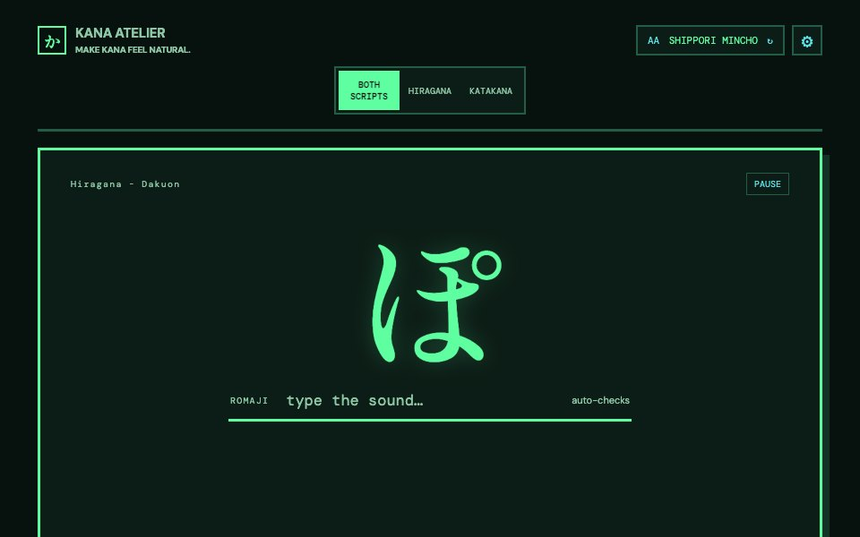

Learning tool
Kana Atelier
A browser-based tool for practicing Japanese hiragana and katakana. Type the reading in romaji, get immediate feedback, and see which sounds need more practice.

Practice characters and words
Choose hiragana, katakana, or both. In character mode, practice individual sounds and kana combinations. Word mode builds prompts from vocabulary that uses your selected script and character groups.
Spend more time on difficult sounds
The quiz weights prompts using your previous answers. The progress dashboard tracks accuracy and response speed by symbol, and a mistake history shows recent misses. Progress and settings stay in the browser.